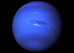

Нептун
 Обнаруженный 23 сентября 1846 года, Нептун стал первой планетой, открытой благодаря математическим расчётам, а не путём регулярных наблюдений. Обнаружение непредвиденных изменений в орбите Урана породило гипотезу о неизвестной планете, гравитационным возмущающим влиянием которой они и обусловлены. Нептун был найден в пределах предсказанного положения. Вскоре был открыт и его спутник Тритон, однако остальные 13 спутников, известные ныне, были неизвестны до XX века. Нептун был посещён лишь одним космическим аппаратом, «Вояджером-2», который пролетел вблизи от планеты 25 августа 1989 года.
{kind=link}
 Нептун по составу близок к Урану, и обе планеты отличаются по составу от более крупных планет-гигантов — Юпитера и Сатурна. Иногда Уран и Нептун помещают в отдельную категорию «ледяных гигантов». Атмосфера Нептуна, подобно атмосфере Юпитера и Сатурна, состоит в основном из водорода и гелия, наряду со следами углеводородов и, возможно, азота, однако содержит в себе более высокую пропорцию льдов: водного, аммиачного, метанового. Ядро Нептуна, как и Урана, состоит главным образом из льдов и горных пород. Следы метана во внешних слоях атмосферы, в частности, являются причиной синего цвета планеты.
Нептун по составу близок к Урану, и обе планеты отличаются по составу от более крупных планет-гигантов — Юпитера и Сатурна. Иногда Уран и Нептун помещают в отдельную категорию «ледяных гигантов». Атмосфера Нептуна, подобно атмосфере Юпитера и Сатурна, состоит в основном из водорода и гелия, наряду со следами углеводородов и, возможно, азота, однако содержит в себе более высокую пропорцию льдов: водного, аммиачного, метанового. Ядро Нептуна, как и Урана, состоит главным образом из льдов и горных пород. Следы метана во внешних слоях атмосферы, в частности, являются причиной синего цвета планеты.
В атмосфере Нептуна бушуют самые сильные ветры среди планет Солнечной системы, по некоторым оценкам, их скорости могут достигать 2100 км/ч. Во время пролёта «Вояджера-2» в 1989 году в южном полушарии Нептуна было обнаружено так называемое Большое тёмное пятно, аналогичное Большому красному пятну на Юпитере. Температура Нептуна в верхних слоях атмосферы близка к 220°C. В центре Нептуна температура составляет по различным оценкам от 5400 K до 7000—7100°C, что сопоставимо с температурой на поверхности Солнца и сравнимо с внутренней температурой большинства известных планет. У Нептуна есть слабая и фрагментированная кольцевая система, возможно, обнаруженная ещё в 1960-е годы, но достоверно подтверждённая «Вояджером-2» лишь в 1989 году.
В 1948 году в честь открытия планеты Нептун было предложено назвать новый химический элемент под номером 93 нептунием.
12 июля 2011 года исполнился ровно один Нептунианский год или 164,79 земного года — с момента открытия Нептуна 23 сентября 1846 года.